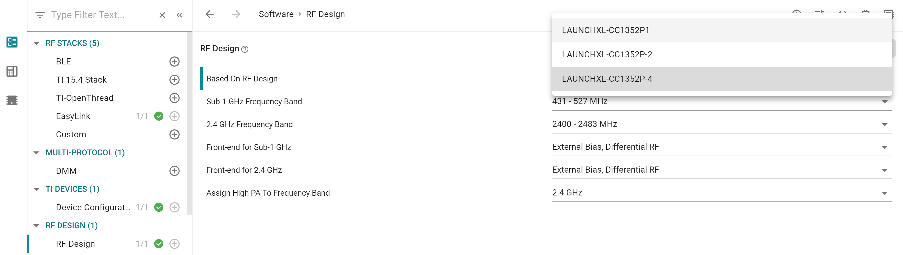

Custom hardware¶
This section will explain how modify the board files from the SimpleLink CC2640R2 SDK to enable code to run on custom hardware.
Introduction to board files¶
TI-RTOS drivers rely on “board files” for their board-specific configuration
parameters. The convention is to name these files based on the development kits
provided by TI in addition to a generic Board.h with Board_* definitions
to map the proper pins defined by ioc.h.
In the examples provided in the SDK the board file is typically named after the board used.
For example, for the examples found under CC1310 Launchpad, TI drivera , the following comprise the set of board files used by the CC2640R2F LaunchPad development kit:
- Board.h
- CC1310_LAUNCHXL.h
- CC1310_LAUNCHXL.c
TI recommends to start with these existing set of board files when porting an application to custom development boards. When modifying or porting these board files, user should consult with TI Driver APIs.
Quick guide to Creating a Custom Board File¶
Here the names of the files used for the CC1310 Launchpad is used. If you are using a different Launchpad the names of the board files reflect this. This is valid for all packet sizes. Make sure that the file you are editing is locally in the project and not a file located in the SDK installation.
Open CC1310_LAUNCHXL.h
For each resource, assign a IOID number according to what is used in the custom PCB.
As an example: If the UART RX pin is connected to DIO 10 set:
#define CC1310_LAUNCHXL_UART_RX IOID_10If UART is not used, set all 4 UART pins to PIN_UNASSIGNED
Only board signal alias you are using in your code. All other should be set to PIN_UNASSIGNED.
Test that your code compiles and run.
Rename the board files to reflect the name of your design.
- As an example: If the UART RX pin is connected to DIO 10 set:
#define CC1310_LAUNCHXL_UART_RX IOID_10
If UART is not used, set all 4 UART pins to PIN_UNASSIGNED
DIO mapping¶
Board_init() is called from main() and calls the following functions: * PIN_init (used if the PIN driver is used) * Board_initHook
The PIN_init uses BoardGpioInitTable as input. Modify this table to correspond to your board.
The Board_initHook() function is used to run board specific functions. On the launchpad CC1310_LAUNCHXL_shutDownExtFlash is called. If the custom board doesn’t have an external flash, the call to this function should be removed.
If the GPIO driver is used: The GPIO_setConfig function uses the table defined by GPIO_PinConfig in CC1310_LAUNCHXL.c. Modify this accordingly to the board you are using. The CC1310_LAUNCHXL_GPIOName enum in CC1310_LAUNCHXL.h have to be changed in the same manner. The table in the .c file is the physical pin mapping, the table in the .h file is the logical name used in the code. The first entry in the table in the .h file correspond to the first entry in the .c file and so on.
The GPIO and PIN tables define the DIO default state.
Unused drivers¶
Note
For CC13x2/ CC26x2 this is done by SysConfig
The board files contains declarations of objects used by the drivers. If a driver is not used the compiler should in most cases discard the objects but in some cases the unused objects could consume memory. In these cases the unused objects could be deleted.
To delete the objects do as follows:
- Remove the following variables from <BOARD>.h:
- All of PIN defines <BOARD>_<Module>_<PIN>
- All of typedef enum <BOARD>_<Module>Name
- Remove the following variables from <BOARD>.c:
- <Module>_count
- <Module>_config
- <module>CC26xxHWAttrs
- <module>CC26xxObjects
- Any other local variables used by the above
- Remove the following variables from the Board.h:
- All peripherals of Board_<Module>
As long as the items are deleted from <BOARD>.h the compiler will give a warning/ error if some other entries are not deleted.
Unused peripherals¶
Note
For CC13x2/ CC26x2 this is done by SysConfig
In some cases the driver is used but not all objects tied to the driver is used. Then the unused objects can be deleted.
Example:
The CC1310 contain two SSI modules. Some applications uses only one SPI but the board files allocate memory space for usage for both modules. If the application uses only SPI0 the following can be done:
Go to CC1310_LAUNCHXL.h and locate the SPI definition. Comment out the unused SPI:
typedef enum CC1310_LAUNCHXL_SPIName {
CC1310_LAUNCHXL_SPI0 = 0,
//CC1310_LAUNCHXL_SPI1,
CC1310_LAUNCHXL_SPICOUNT
} CC1310_LAUNCHXL_SPIName;
Go to the CC1310_LAUNCHXL.c and locate the following const declarations and comment out the unused SPI as shown:
const SPI_Config SPI_config[CC1310_LAUNCHXL_SPICOUNT] = {
{
.fxnTablePtr = &SPICC26XXDMA_fxnTable,
.object = &spiCC26XXDMAObjects[CC1310_LAUNCHXL_SPI0],
.hwAttrs = &spiCC26XXDMAHWAttrs[CC1310_LAUNCHXL_SPI0]
},
//{
// .fxnTablePtr = &SPICC26XXDMA_fxnTable,
// .object = &spiCC26XXDMAObjects[CC1310_LAUNCHXL_SPI1],
// .hwAttrs = &spiCC26XXDMAHWAttrs[CC1310_LAUNCHXL_SPI1]
//},
};
const SPICC26XXDMA_HWAttrsV1 spiCC26XXDMAHWAttrs[CC1310_LAUNCHXL_SPICOUNT] = {
{
.baseAddr = SSI0_BASE,
.intNum = INT_SSI0_COMB,
.intPriority = ~0,
.swiPriority = 0,
.powerMngrId = PowerCC26XX_PERIPH_SSI0,
.defaultTxBufValue = 0xFF,
.rxChannelBitMask = 1<<UDMA_CHAN_SSI0_RX,
.txChannelBitMask = 1<<UDMA_CHAN_SSI0_TX,
.mosiPin = CC1310_LAUNCHXL_SPI0_MOSI,
.misoPin = CC1310_LAUNCHXL_SPI0_MISO,
.clkPin = CC1310_LAUNCHXL_SPI0_CLK,
.csnPin = CC1310_LAUNCHXL_SPI0_CSN,
.minDmaTransferSize = 10
},
//{
// .baseAddr = SSI1_BASE,
// .intNum = INT_SSI1_COMB,
// .intPriority = ~0,
// .swiPriority = 0,
// .powerMngrId = PowerCC26XX_PERIPH_SSI1,
// .defaultTxBufValue = 0xFF,
// .rxChannelBitMask = 1<<UDMA_CHAN_SSI1_RX,
// .txChannelBitMask = 1<<UDMA_CHAN_SSI1_TX,
// .misoPin = CC1310_LAUNCHXL_SPI1_MISO,
// .mosiPin = CC1310_LAUNCHXL_SPI1_MOSI,
// .clkPin = CC1310_LAUNCHXL_SPI1_CLK,
// .csnPin = CC1310_LAUNCHXL_SPI1_CSN,
// .minDmaTransferSize = 10
// }
};
The same method can be used for other objects as ADC, PWM, GPTimer
CC13x0 F32/ F64¶
The following flash sizes are available for the CC13x0 family: 128 kB, 64 kB and 32 kB.
- In the project properties-> General Project tab, select the correct variant.
- In the linker file (file extention .cmd) change the FLASH_SIZE and RAM_SIZE variables
- according to the variant used.
Initial Board Bring Up¶
When powering up a custom board with the CC2640R2 for the first time, it is recommended to follow the Board Bring-Up section on CC13xx/CC26xx Hardware Configuration and PCB Design Considerations. After confirming that the board is being powered correctly by the battery or power supply and can be identified by the JTAG tool, programming the device with a minimal SW application to verify stability is also suggested.
Set-up SysConfig When Using a Custom Board¶
The following only applies when using a CC1352P device.
When using a CC1352P device, you need to configure SysConfig in order to meet your design’s needs. This must be done by selecting the correct option for “Based On RF Design” inside the RF Design module of SysConfig.
Figure 29. Select the correct option for “Based On RF Design” inside the RF Design module of SysConfig
Note
A few issues might appear when migrating an example from SDK 3.30 or from SDK 3.40. In this case, makes sure that the correct option for “Based On RF Design” is selected inside all the RF-STACKS SysConfig modules used by your project.